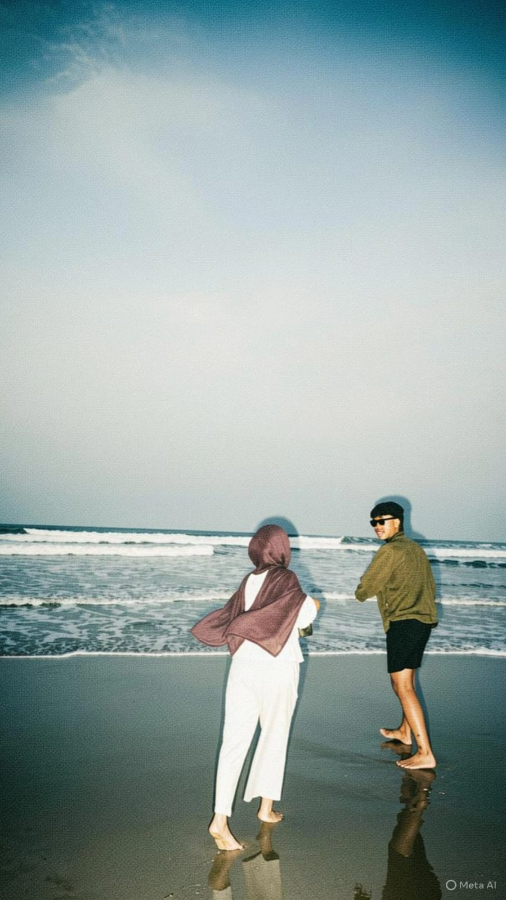
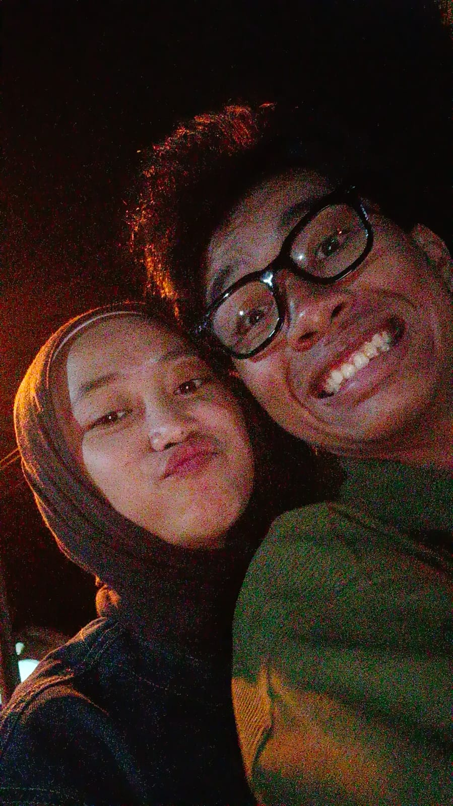
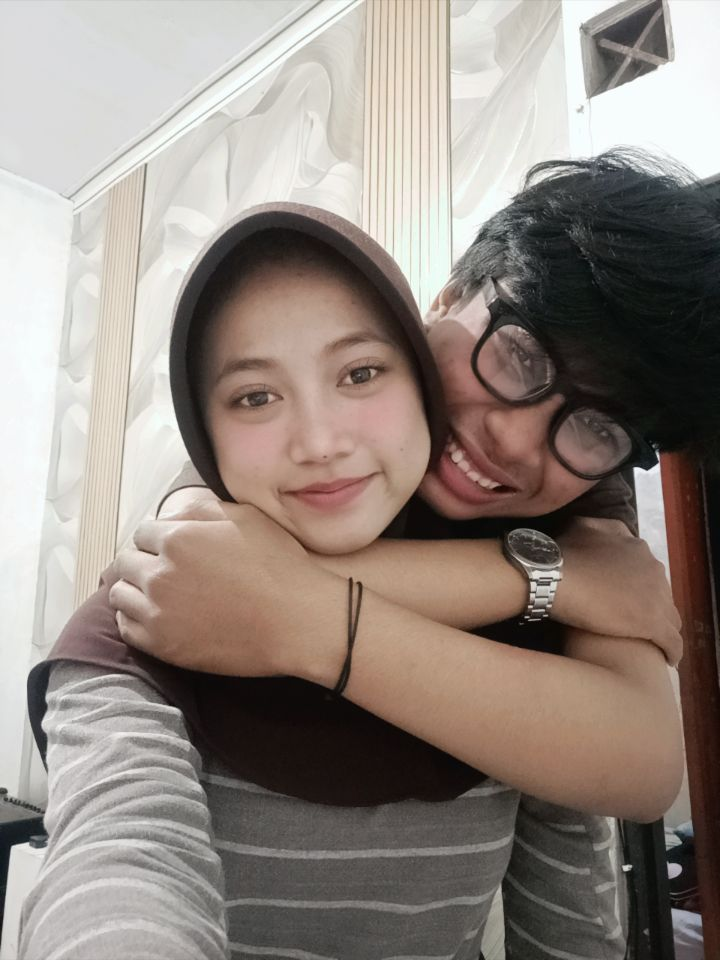
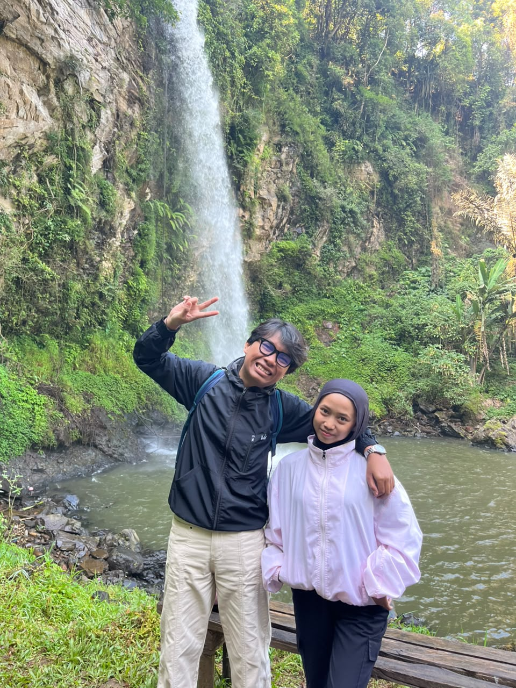

A LITTLE SURPRISE FOR YOU
Hai, sayang....
Kalau kamu sampai di halaman ini,
berarti kamu berhasil menemukan jalan masuk
ke sebuah cerita yang mungkin selama ini sudah kamu kenal.
Tentang bagaimana semuanya bermula dari seseorang yang bahkan tidak kukenal namanya.
Seseorang yang awalnya hanya kulihat sekilas di antara ramainya lapangan sekolah.
Seseorang yang waktu itu memakai masker, berjalan bersama dua orang lainnya...
dan entah kenapa, dari sekian banyak orang yang ada di sana, justru kamu yang membuatku penasaran.
Aku tidak pernah menyangka, rasa penasaran kecil itu akan membawa kita sejauh ini.
Mari kita kembali sebentar.
Ke awal dari cerita kita. ❤️
01 · TODAY
Happy Birthday Dita Naesa Putri! 🎂❤️
Selamat ulang tahun yang ke-19, sayang.
Semoga di umur yang baru ini, kamu selalu dikelilingi hal-hal baik, orang-orang baik, dan kebahagiaan yang nggak pernah habis.
Semoga semua yang kamu impikan satu per satu bisa menjadi kenyataan.
Semoga selalu menjadi orang yang selalu hadir dihidup aku.
Semoga selalu menjadi Dita Naesa Putri yang aku kenal.
Semoga selalu sayang dan selalu ada di samping aku.
02 · US
Seperti yang kamu tahu
Hari ini bukan cuma
Hari ulang tahun kamu.
Hari ini juga...
Hari Anniversary Kita.
Tiga tahun.
Tiga tahun sejak cerita kita dimulai.
03 · OUR STORY
Cerita yang awalnya
bahkan nggak direncanakan.
The Girl Behind The Mask
"Semuanya dimulai dari sebuah tatapan yang bahkan tidak sengaja."
Waktu itu aku belum tahu siapa kamu. Aku bahkan tidak tahu namamu. Yang aku tahu hanya satu... setiap kali aku berjalan melewati lapangan, selalu ada tiga orang yang berjalan berlawanan arah.
Dan di antara ketiganya, ada satu orang yang selalu berhasil membuat mataku berhenti lebih lama. Kamu.
Dengan masker berwarna pink, hitam, dan hijau. Sesederhana itu awalnya.
Tidak ada percakapan. Tidak ada perkenalan. Tidak ada alasan untuk mengingat satu sama lain..
Hanya beberapa detik ketika mata melihat, lalu langkah kembali berjalan. Tapi anehnya... setelah itu aku mulai penasaran.
"Siapa sebenarnya dia?"
The Search
"Kadang, rasa penasaran adalah awal dari sesuatu yang tidak pernah kita rencanakan."
Dari sekadar penasaran, aku mulai mencari. Aku bertanya kepada teman. Aku mencoba mencari tahu kamu kelas berapa. Jurusan apa.
Sampai akhirnya aku menemukan beberapa petunjuk tentangmu. Dan kemudian ada satu hal yang sampai sekarang masih kuingat. Sebuah NGL.
Sebuah pertanyaan tentang seseorang yang suka memakai masker dan berjalan bertiga. Aku yang membacanya waktu itu cuma bisa diam. Karena deskripsinya terlalu familiar.
Terlalu mirip dengan seseorang yang selama ini sedang kucari. Lucunya... waktu itu aku belum tahu bahwa ternyata pertanyaan itu kamu sendiri yang tulis. Kamu penasaran siapa yang memperhatikanmu.
Sedangkan aku... bahkan belum sadar kalau orang yang sedang kucari ternyata juga sedang mencari tahu tentangku.
Dan tanpa kita sadari,"cerita kita sudah mulai menulis dirinya sendiri."
The Timing Was Wrong
"Kadang bukan perasaannya yang salah. Hanya waktunya yang belum tepat."
Setelah itu kita mulai saling mengenal. Kita mulai berbicara. Mulai bercanda. Mulai saling memperhatikan..
Perlahan, kamu bukan lagi sekadar seseorang yang kulihat dari kejauhan. Tapi ternyata ada satu hal yang membuat semuanya tidak sederhana. Saat itu, kamu sudah memiliki seseorang.
Dan aku tahu... tidak semua perasaan harus dipaksakan untuk menjadi sebuah hubungan. Jadi aku memilih mundur. Bukan karena perasaanku hilang.
Tapi karena aku sadar, terkadang mencintai seseorang juga berarti tahu kapan harus berhenti memaksa keadaan.
Kita sempat berjalan masing-masing. Tapi entah kenapa... setiap kali kamu kembali, hatiku masih berada di tempat yang sama. Mungkin memang benar apa yang pernah kamu katakan.
kita adalah dua orang yang bertemu di waktu yang salah.The Almost
"Kita hampir menjadi sesuatu, sebelum akhirnya benar-benar menjadi kita."
Ada masa ketika aku mencoba meyakinkan diriku sendiri bahwa mungkin cerita ini memang harus selesai.
Sampai suatu hari...
Kita kembali dipertemukan. Di tempat yang sama. Di antara banyak orang.
Tapi kali ini pandangan kita bertemu lebih lama.
Teman-teman mulai menggoda.
Dan entah keberanian dari mana yang tiba-tiba datang, aku mencubit pipimu.
Kamu membalasnya.
Sesederhana itu.
Tapi untukku, momen kecil itu terasa seperti sesuatu yang sudah lama menunggu untuk terjadi.
Setelahnya kita kembali berbicara. Bahkan hal sesederhana hotspot yang tersambung akhirnya menjadi alasan untuk membuka percakapan lagi.
Lucu ya...
Kadang sebuah cerita tidak benar-benar berakhir.
Ia hanya berhenti sebentar, sebelum menemukan alasan untuk dimulai lagi.
Finally, We Said It
"Malam itu, sesuatu yang selama ini kita sembunyikan akhirnya memiliki suara."
Kita berbicara.
Tentang banyak hal. Tentang perasaan. Tentang apa yang sebenarnya kita rasakan.
Ada banyak hal yang selama ini hanya disimpan dalam hati, akhirnya keluar malam itu.
Dan ternyata...
Aku tidak sendirian.
Perasaan yang selama ini kupikir hanya milikku, ternyata juga tinggal di hatimu.
"Kamu menyukaiku. Aku menyukaimu."
Kita saling peduli.
Hanya saja keadaan masih belum memberikan kita tempat untuk benar-benar bersama.
Jadi kita memilih untuk menjalani hidup masing-masing.
Dengan satu kalimat yang mungkin terdengar sederhana, tapi diam-diam menyimpan banyak harapan:
"Kalau memang kita punya jalan, mungkin suatu hari nanti kita akan bertemu lagi."
Dan ternyata...
Hari itu benar-benar datang.
The Day I Finally Asked
"Setelah perjalanan yang panjang, akhirnya aku tidak ingin hanya berharap."
Ketika akhirnya keadaan memberi kita kesempatan, aku sadar satu hal.
Aku tidak ingin kembali hanya menjadi seseorang yang melihatmu dari kejauhan.
Jadi aku mencoba.
Aku menyiapkan sesuatu. Meminta bantuan orang-orang terdekat. Menyusun kejutan yang waktu itu bahkan membuatku sendiri gugup.
Sampai akhirnya hari itu tiba.
Aku datang.
Kamu ada di sana.
Dan untuk pertama kalinya, setelah perjalanan yang begitu panjang, aku tidak lagi hanya bertanya-tanya tentangmu.
Aku tidak lagi hanya berharap.
Aku akhirnya bisa mengatakan:
"Maukah kamu menjadi bagian dari hidupku?"
Dan jawabanmu...
menjadi salah satu jawaban paling bahagia yang pernah aku terima.
Hari itu,
kita bukan lagi dua orang yang saling mencari.
Kita akhirnya menjadi kita. ❤️
Not Everything Was Easy
"Ternyata menemukan satu sama lain bukanlah akhir dari perjuangan."
Aku pernah berpikir, setelah kita bersama semuanya akan menjadi mudah.
Ternyata aku salah.
Kita pernah bertengkar. Pernah salah paham. Pernah saling menyakiti.
Bahkan pernah sampai pada titik di mana kita harus melepaskan satu sama lain.
Ada hari ketika aku merasa kehilanganmu.
Ada malam ketika aku bertanya-tanya apakah cerita kita benar-benar sudah selesai.
Tapi mungkin...
cinta bukan tentang tidak pernah terluka.
Cinta adalah tentang dua orang yang, setelah terluka, masih memilih untuk mencoba memperbaikinya.
Kita kembali.
Bukan sebagai dua orang yang sama seperti sebelumnya.
Tapi sebagai dua orang yang sudah belajar.
Belajar memahami. Belajar percaya. Belajar menurunkan ego. Belajar meminta maaf. Belajar menjadi lebih dewasa.
Dan yang paling penting...
"Belajar bahwa mempertahankan seseorang juga membutuhkan usaha."
Three Years Later
"Tiga tahun setelah rasa penasaran itu dimulai..."
Hari ini kamu berusia 19 tahun.
Dan hari ini juga, kita sudah berjalan bersama selama tiga tahun.
Kalau ada yang bilang kepadaku dulu, bahwa seseorang yang hanya kulihat sekilas di lapangan sekolah akan menjadi seseorang yang begitu berarti dalam hidupku, mungkin aku tidak akan percaya.
Karena waktu itu, aku bahkan belum tahu namamu.
Aku hanya tahu kamu sebagai cewek yang memakai masker dan berjalan bertiga.
Sekarang aku mengenal tawamu. Mengenal caramu marah. Mengenal caramu bercanda.
Mengenal sisi baikmu, bahkan sisi yang mungkin tidak selalu mudah untuk dipahami.
Dan setelah semua yang kita lewati...
Aku masih di sini.
Kamu masih di sini.
Dan cerita kita masih berjalan. ❤️
09 · OUR MEMORIES
Beberapa kenangan mungkin terlihat sederhana.
"Tapi bersamamu, hal sederhana menjadi sesuatu yang ingin kuingat selamanya."
Kita mungkin tidak selalu punya momen besar.
Tidak setiap hari menjadi hari yang istimewa.
Tapi justru dari hal-hal kecil itulah banyak kenangan kita terbentuk.
Percakapan random. Tawa yang tidak jelas. Foto-foto yang mungkin terlihat biasa. Pertemuan yang tidak direncanakan.
Semuanya perlahan menjadi bagian dari perjalanan kita.
Dan kalau suatu hari nanti kita melihat kembali semua ini, aku harap kita bisa tersenyum dan berkata:
"Ternyata kita sudah sejauh ini."

Our Memory ❤️

Our Moment ❤️

Our Story ❤️

Us ❤️
10 · A LETTER
A Letter For You
"Kalau selama ini aku jarang mengatakannya, biarkan halaman ini yang mengatakannya untukku."
Dear sayang...
Aku mungkin bukan orang yang selalu pandai mengungkapkan apa yang ada di dalam hati.
Kadang aku lebih memilih bercanda. Kadang memilih diam. Kadang bahkan membiarkan sesuatu yang seharusnya kukatakan hanya tersimpan di kepala.
Tapi kalau ada satu hal yang ingin aku pastikan kamu tahu, itu adalah:
"Aku bersyukur pernah menemukanmu."
Dari semua kemungkinan yang bisa terjadi di hidup ini, kita somehow dipertemukan.
Dari sekian banyak orang di sekolah, mataku berhenti di kamu.
Dari rasa penasaran kecil, lahirlah sebuah perjalanan yang begitu panjang.
Kita memang tidak sempurna.
Kita pernah salah. Kita pernah ego. Kita pernah terluka.
Tapi aku tidak ingin menghapus semua itu.
Karena semua kesalahan, semua pertengkaran, semua air mata, dan semua proses yang kita lewati akhirnya membawa kita menjadi kita yang sekarang.
Terima kasih karena pernah memilihku.
Terima kasih karena pernah kembali.
Terima kasih karena sampai hari ini masih mau berjalan bersamaku.
Selamat ulang tahun yang ke-19, sayang.
Semoga di umur yang baru, kamu menemukan lebih banyak alasan untuk tersenyum.
Semoga semua mimpi yang sedang kamu kejar perlahan menemukan jalannya.
Dan semoga...
kalau nanti kita melihat kembali hari ini, kita bisa berkata:
"Ternyata ini baru awal dari banyak hal indah yang kita lewati bersama."
Happy Birthday, Dita Naesa Putri.❤️
Happy 3rd Anniversary to us.
I love you.❤️
— Krisna Raga
THE END?
Dulu aku cuma penasaran dengan seseorang.
Sekarang aku punya seseorang yang ingin terus kulihat ada di sampingku.
Dulu aku hanya mencari tahu siapa namamu.
Sekarang aku berharap namamu tetap menjadi bagian dari cerita hidupku.
Tiga tahun sudah kita lewati.
Tapi aku tidak ingin cerita ini berhenti di sini.
Karena masih ada banyak tempat yang belum kita datangi.
Banyak foto yang belum kita ambil.
Banyak cerita yang belum kita tulis.
Banyak hari ulang tahun yang belum kita rayakan.
Dan masih banyak versi dari "kita" yang belum kita temui.
Jadi...
Bukan untuk membuat cerita yang sempurna.
Tapi untuk membuat cerita yang benar-benar milik kita.
Happy Birthday
Dita Naesa Putri🎂❤️
Happy 3rd Anniversary to us.
Chapter berikutnya belum selesai.
Dan aku masih ingin menulisnya bersamamu. ❤️
pencet berkali kali!I Love You ❤️
Semoga kita masih punya banyak chapter untuk ditulis bersama.